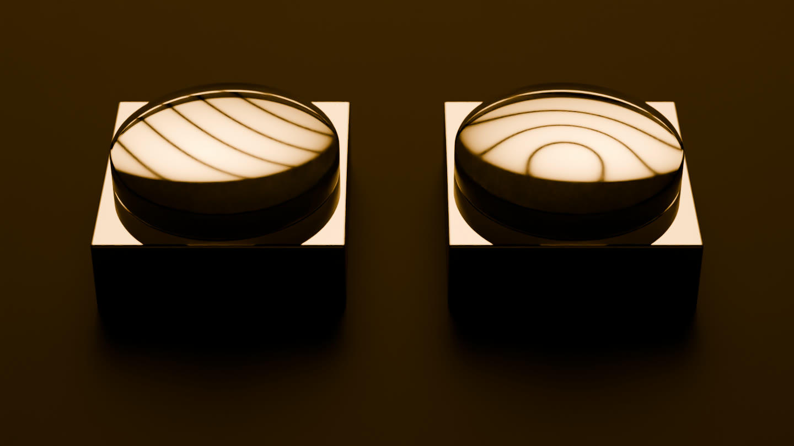

كلتاهما بدت مستوية.
هاتان كتلتان من الفولاذ المصقول، تبدوان متطابقتين بالعين واللمس. مرِّر الصفحة، واختبرهما.
محاكاة. كلّ هدبةٍ فيها محسوبة، لا مرسومة.
المحاكاة بلا صوت: قرصٌ من الزجاج الشفاف ينزل على الكتلة الأولى ويستقر. وتحته تظهر خطوطٌ داكنة دقيقة، ثم تتسع وتهدأ: مستقيمةً متوازيةً متساويةَ التباعد.
ضع قرصًا من الزجاج على إحداهما، تحت ضوء الصوديوم.
القرص سطحٌ بصري مرجعي، مصقولٌ مستويًا إلى جزءٍ من طول موجة الضوء.
يرسم الهواء تحته خطًّا عن كل 0.29 ميكرومتر من الفجوة.
خطوطٌ مستقيمة متوازية متساوية التباعد: هذه الكتلة مستوية.
المحاكاة بلا صوت: ينتقل المنظر إلى الكتلة الثانية، وهي تبدو مثل الأولى. ينزل عليها قرصٌ ثانٍ ويستقر، وتحته تنغلق الخطوط حلقاتٍ حول وسطها.
والآن الكتلة الأخرى.
حلقات.
يرتفع مركزها 1.2 ميكرومتر فقط. وكان الفرق خفيًّا حتى كشفه الزجاج.
المحاكاة بلا صوت: يبتعد المنظر ليُظهر الكتلتين تحت قرصيهما، خطوطًا مستقيمة على الأولى وحلقاتٍ على الثانية.
ارفع القرص الزجاجي، ثم اضغطه برفق.
القرصان مستقرّان كما تركهما الفيلم. اسحب إلى الأعلى على أيٍّ منهما لترفعه، وإلى الأسفل لتعيده، وجانبيًا لتديره. متصفحك يحسب كل هدبةٍ، من الفيزياء نفسها التي في الفيلم.

الفولاذ والزجاج والضوء حول الهدب من الفيلم نفسه، مُصيَّرةً مرةً واحدة عند خمس انعكاسيات؛ أما الهدب فتُحسَب هنا وأنت تضغط، وتُمزَج الصورة عند الانعكاسية التي تعطيها. تعذّر تشغيلها في هذا المتصفح؛ الصورة أعلاه من الفيلم.
يصنع الذكاء الاصطناعي إجاباتٍ وأرقامًا وقطعًا تبدو صحيحة. وأن يبدو الشيء صحيحًا ليس اختبارًا.
النموذج يقترح.
والنظام يقرّر.
تبني CytherAI الجزء من الذكاء الاصطناعي الذي يقرّر ما يُسمح بحدوثه: فحوصٌ تقف خارج النموذج، كما يقف الزجاج خارج الفولاذ.
كيف صُنعت
هذه محاكاة، صُنعت في Blender بمحرّك Cycles على Apple M4، وكلّ هدبةٍ فيها محسوبة لا مرسومة. في كل لقطة، تسأل كلُّ نقطةٍ من كل كتلة عمّا كان سيُظهره السطح البصري المرجعي عندها: انعكاسية الطبقات من زجاجٍ وغشاءٍ من الفضة سُمكه 15 نانومترًا وفجوةٍ هوائية وفولاذ، مع حساب كل انعكاسٍ داخلها، لخطَّي الصوديوم الأصفرين، عند الفجوة التي يضعها المشهد في تلك اللحظة، وطورُها مأخوذٌ من زاوية الكاميرا ومن خلال عدستها. أما الانعكاسيات نفسها فمحسوبةٌ عند السقوط العمودي، وهذا تقريبٌ لكاميرا تنظر من زاويةٍ مائلة، ويُعطى الفولاذ ثوابتَ الحديد.
القرصان مفضَّضان جزئيًا، كما كانت أقراص مقاييس التداخل للكتل المعيارية، وهذا يُرهِف الهدب. ينزل كلٌّ منهما، ويطرد طبقة الهواء تحته، ثم يستقر على ميلٍ طفيف؛ والميل يحدّد تباعد الخطوط. وارتفاع الكتلة الثانية قبّةٌ ناعمة علوّها 1.2 ميكرومتر. لم تُوضع أيُّ هدبةٍ باليد.
الثوابت البصرية قياساتٌ منشورة: السيليكا المصهورة (Malitson, 1965)، والحديد (Johnson and Christy, 1974)، والفضة (Johnson and Christy, 1972)، من قاعدة بيانات refractiveindex.info. وطريقتان مستقلتان لحساب الطبقات، مجموع Airy والمصفوفات المميِّزة، تعطيان الانعكاسية نفسها لقرصٍ غير مفضَّض، بين 0.382 و0.640. وهذا التوافق، كتوافق هذه الصفحة مع الفيلم، يتحقق من الحساب لا من النموذج.
ما ليست عليه
إنها محاكاة، لا صورة فوتوغرافية. الكتلتان والقبّة والميلان من صنعنا؛ أما الفيزياء فليست كذلك. في المشهد القرصان كاملان، فالخطوط المستقيمة المتوازية المتساوية التباعد تعني أن الكتلة الأولى مستوية؛ أما في الفحص الحقيقي فتعني أنها مستوية في حدود دقة القرص المرجعي نفسه. والفحص الحقيقي يواجه أيضًا الغبار والحرارة واليدَ التي تضع الزجاج.